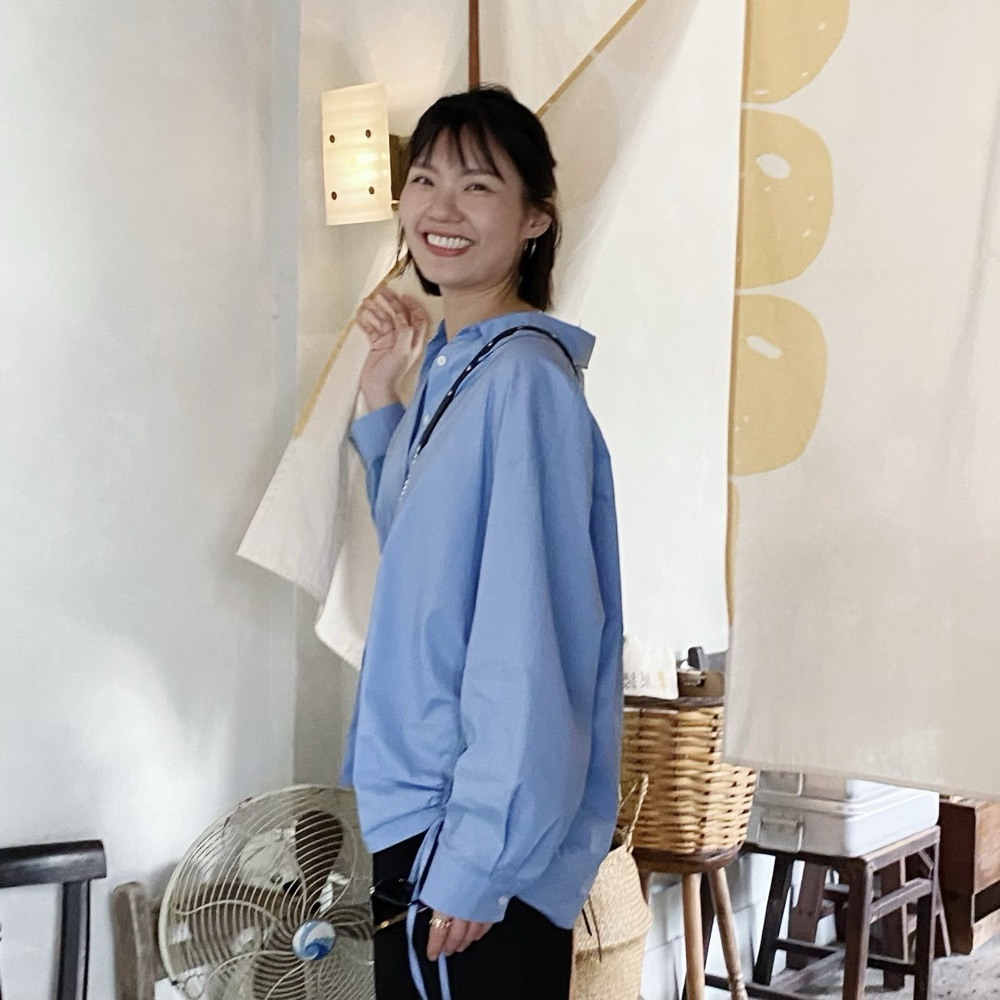

Hi, I'm Tracy
I’m a curious person who enjoys observing the world around me, breaking down problems, thinking things through, and asking why.
My design process begins with understanding the problem. I explore different perspectives and approaches, then refine my ideas through iteration to find the right solution.
I value the thinking and judgment behind design decisions, not just the delivery of what’s requested. From defining product features and structuring user flows to refining interface details, I’m interested in understanding the reasoning behind each decision and exploring how ideas can be translated into real products.
How I Work
Understand the problem before deciding how
I start from user feedback and real-world context to confirm what the product truly needs to solve.
Work with AI to bring ideas to life faster
I bring AI into my design workflow for ideation, copywriting and development, using it to broaden my thinking and work more efficiently.
From design system to shipped product
I build shared components and design rules, so the design stays consistent and future features and development have a clear foundation.